STELLARIUM ULTRA
Compiled C / ERFA / WebGL2 / NanoVG WASM
Booting Astronomical Rendering Pipeline...
☰ Observing
STELLARIUM
Ultra Web Observatory
×
FOV
72.0°
• AZ
165.0°
• ALT
+24.0°
60 FPS
📷 Capture
⚙ View Settings
OBJECT // EPHEMERIS
Celestial Body
×
Magnitude
--
Altitude
--
Azimuth
--
Optical Telescope Framing
◯ Eyepiece Mask
Wide 72°
Binoculars 8°
Scope 2°
Planetary 0.5°
0.15°
🎯 Center & Track
🔭 Zoom 2° FOV

✳
🔓
Sofia Observatory
42.70°N · 23.32°E
--:--:--
Astronomical Dusk
Stellarium Web Engine (
GNU AGPL v3
)
Date & Time Controls
Now
Dusk
Pause
▲
2026
▼
▲
11
▼
▲
16
▼
•
▲
20
▼
▲
00
▼
▲
00
▼
-1000×
-100×
0×
1×
10×
100×
1000×
VIEW SETTINGS & ASTROPHOTOGRAPHY
×
HDR Optical Bloom (WebGL2)
38%
Star Diffraction Spikes
55%
Exposure Gain
1.15×
Bortle Light Pollution
Class 2
Star Relative Scale
1.10×
Meteor Showers (ZHR)
65/hr
Deep-Sky Zoom Survey
Palomar Optical DSS2 Color (Order 9)
2MASS Infrared Galactic Survey
Off (Vector Stars Only)
Sky Culture Mythology
Western (IAU 88 + Artwork)
Belarusian Folk Lore
Milky Way HiPS
Deep Sky Objects
Artificial Satellites (TLE)
Comets (MPC)
Minor Planets / Asteroids
Solar System Labels
Ecliptic Line
Celestial Meridian
4× Supermoon Magnifier
Show Live Engine FPS
OBSERVER COORDINATES & WORLD MAP
×
Set
GPS